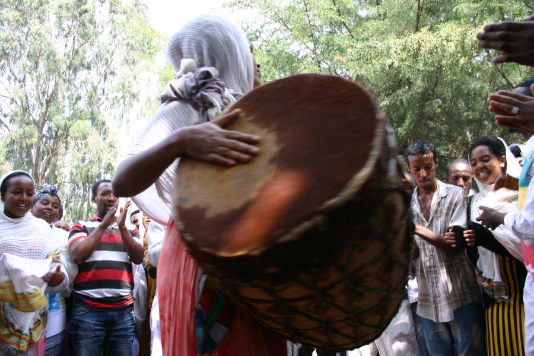
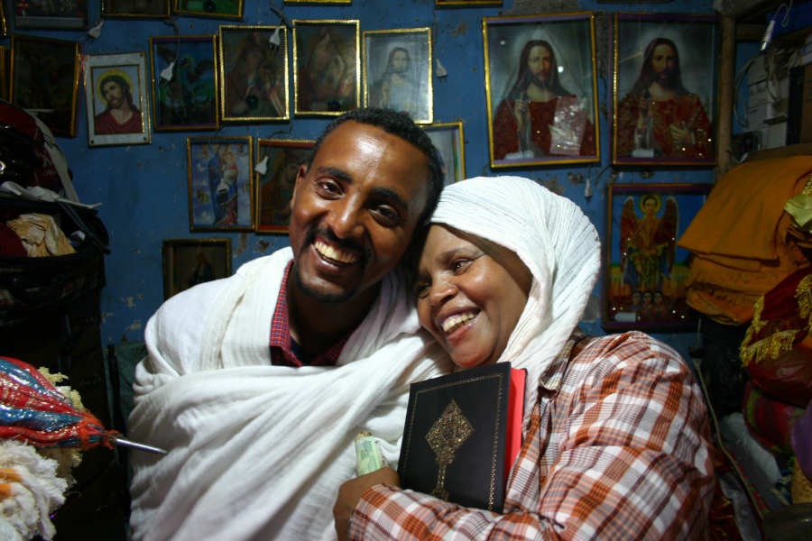

(Nigrizia gennaio 2015 - qui il pdf)
Swinging Addis, Praying Addis
Un'antica lira basso che può suonare solo durante il digiuno, gli stessi tamburi per coreografie liturgiche e balli popolari, chiese e club della capitale. La musica spirituale, terragna e sensuale che si vive ad Addis Abeba
Testo e foto di Fabio Artoni

Alemu Aga è il più grande interprete della beghena, una grande lira che suonava il Re Davide e che poi arrivò in Etiopia con Menelik I, di ritorno da un viaggio a Gerusalemme per salutare il padre, il Re Salomone. Niente male come tradizione ma anche il parere più laico dei musicologi valuta interessante questo strumento, per la sua arcaicità intatta: una lira con braccia decorate, di legno e pelle di capra, con corde in budello. Quando viene pizzicata la beghena rilascia vibrazioni gravi, che ronzano e pungono, da lira basso. Un suono difficile da trovare perfino in un synth dai mille timbri.
Alemu è anche un uomo d'affari, ha un negozio di articoli da cucina a Piassa, in centro ad Addis Abeba. Da queste parti si vende di tutto ma Alemu mi avvisa: “Se vuoi comprarti una beghena puoi farlo ma al massimo la puoi usare come soprammobile. Non puoi suonarla come ti pare... e mai con altri strumenti”. Il fatto è che la beghena è uno strumento dalle origini sacre per la Chiesa Ortodossa d'Etiopia; non si usa durante la liturgia ma è l'unico timbro che si può ascoltare per radio, in televisione e nei dintorni delle chiese ortodosse durante il grande digiuno di Pasqua; può funzionare come amuleto e tenere alla larga spiriti cattivi; è intimo e solista e non può suonare con altri strumenti a parte la voce; accompagna preghiere che parlano di morte, futilità della vita, peccato, salvezza... talvolta in forma di poesia. Come tutto quello che è religioso sprizza simbolismo: la cassa armonica è la voce della Vergine Maria, le dieci corde i dieci comandamenti, le due braccia gli arcangeli Michele e Gabriele e il giogo che li unisce Dio stesso.
Alemu è di casa nei festival musicali europei; in un disco divide le tracce con Asnakech Worku; un altro suo disco è un capitolo della collana discografica Ethiopiques, che in ventinove episodi ha scandagliato il meglio dell'ethio soul e del folklore etiopico. Fino alla metà anni degli anni Settanta ad Addis Abeba si stratificarono il canto melismatico e le scale della tradizione musicale etiopica, gli ottoni delle orchestre da ballo della guardia imperiale di Haile Selassie, il pathos abissino e il rhytmn'blues, chitarre e distorsori, saxofoni che traslarono sullo strumento gli shellela, i canti di guerra. Nella collana Ethiopiques c'è la musica religiosa senza tempo di Alemu Aga e quella figlia del suo tempo di Mamhud Amhed o Ayelew Mesfin. La praying addis con la swinging addis, perchè si può cominciare la giornata con un'orazione cantata e finirla annegando in birra la stanchezza in una bettola con ombre adatte al mood di “Mela Mela”: “Non c'è una soluzione, tutto è diventato confuso. Il mio cuore ha cercato ma alla fine è caduto in un buco profondo”. E l'organicità di Ethiopiques è salva: anche con timbri e riff occidentali la musica della swinging addis rimase intimamente etiopica, non si offrì mai ruffiana per compiacere il bisogno di “suoni nuovi per una cultura noiosa” dell'industria della world music.
Alemu Aga è il massimo intreprete contemporaneo della beghena, un "basso lira" che viene usato per accompagnare le preghieri dei fedeli della chiesa ortodossa "tewahedo d'Etiopia"
Quando Alemu suona indossa sempre un gabi (scialle) bianco, come si dovrebbe sempre fare; assume una posa fissa e accorda ad orecchio secondo gli intervalli della scala tradizionale che conosce meglio: Tizeta, nostalgia, pressapoco. La forma ripetiva e ipnotica della musica di Alemu ricordano quella per piano a pollice mbira dello Zimbabwe. Ma l'effetto catartico della musica potrebbe essere quello di un blues “giù di corda” di Bessie Smith. Alemu arpeggia e partono delle onde di bassi ronzanti che pungono; anche la mbira ha questo effetto “buzz”. Per ottenere questo timbro si inseriscono delle strisce di pelle tra il ponte e le corde dello strumento. Ma la tecnica è solo una parte del gioco e anche l'espressività è un accessorio. Perchè, dice Alemu: “Soprattutto, chi suona la beghena deve avere una tranquillità interiore per trasmettere serenità a chi l'ascolta”. L'etnomusicologa Stephanie Weisser scrisse una tesi di ricerca in proposito. Registrò tra gli ascoltatori sensazioni del tipo: “Mi fa piangere”, “Penso a mio padre”, “Mi fa dimenticare di essere stata sofferente”, “Mi riempie di gioia e di tristezza”. Tra le manifestazioni corporee si segnalarono lacrime e sguardi ieratici. Niente dita a tamburello sul tavolo e piedi battuti sul pavimento. E quando Alemu cominciò a suonare, anche io mi dimenticai del beat.Sono passati cinquanta anni da quando Duke Ellington compose la trilogia dei Concerti Sacri. Il jazz, musica terragna e sensuale, uscì dalle bettole peccaminose ed entrò in Chiesa dalla porta principale; non per pentirsi ma per celebrare lo spirito, con la sua carica di musica del suo tempo, il Novecento. Era uno degli effetti del Concilio Vaticano II. La chiesa cattolica si apriva, dialogava con l'arte, sfidava la secolarizzazione. La Chiesa Ortodossa Tewahedo (Unione, della natura divina e umana di Dio) non ha mai cercato altre sponde, è sempre bastata a sé stessa.
La beghena è sacra ma non può suonare durante la liturgia, ancor più severa nel non ammettere modifiche moderniste. Basta assistere a una delle celebrazioni dove la coreografia è parte della liturgia: quando il Tabot che simboleggia l'Arca dell'alleanza, le tavole della legge di Mosè, esce dalla chiesa e va in mezzo ai fedeli. Il corpo officiante sono preti e diaconi che hanno studiato i momenti della danza liturgica (aquaquam) con gli strumenti musicali; i movimenti si chiamano shibsheba, significa danzare ma ha un nome diverso da quello usato per la danza secolare. Chi ha studiato musica e danza per la liturgia viene chiamato debterà, ma è un termine ambiguo perché nel sentire popolare i debterà agiscono in ambiti che possono sconfinare nella magia. Gli unici strumenti ammessi sono il tamburo (kebaro), il sistro (tsenastel) e il bastone liturgico (maqwamia). Strumenti simbolici sia nella struttura che nella prassi esecutiva: le estremità del tamburo sono la parte umana e divina di Cristo ma quando viene percosso simboleggia le percosse che Cristo subì.
 La celebrazione inizia con una composizione poetica originale, il qene; dovrebbe essere improvvisato ma forse c'è lo stesso meccanismo dell'improvvisazione jazzistica: un contenuto fresco che sgorga da un mix di conoscenza tecnica e di nutrimento culturale. La tecnica sottesa a questa forma di composizione si chiama sem na work, cera e oro. Allo stesso modo in cui gli orafi si servivano di uno stampo in cera che nascondeva l'oro, il poeta si serve della plasticità e dei diversi accenti delle parole per nascondere il vero significato racchiuso nel qene. I cantastorie d'Etiopia, gli azmari, ne fecero una tecnica per prendersi gioco dei potenti. Col significato di “doppiezza” diede il titolo a un famoso testo dell'antropologo Donald Levine (“Wax and Gold”) sui contadini amhara. Se qualcuno è ambiguo e misterioso un modo dire tra la gente è “parli per qene?”. Ma secondo un docente di teologia cera e oro è un modo per “esprimere il mistero della fede attraverso analogie. La gente pensa che il qene sia un modo di nascondere, in realtà è un modo di chiarire”.
Il qene viene cantato da un officiante secondo modi appresi in molti anni di studio. Poi inizia una danza di movimenti molto lenti, il bastone liturgico segna il tempo. Entrano gli tsenatsel e le percussioni e crescono i movimenti del corpo, l'intensità sonora e il ritmo. Gli officianti si dispongono su due file contrapposte. Talvolta le file si avvicinano e talvolta una sembra spingere indietro l'altra. Il crescendo arriva a un culmine sonoro, ritmico e di movimento quando gli officianti formano un cerchio e cominciano a girare intorno. Arrivano battiti di mani ed “elelta”, grida di giubilo dai fedeli. Secondo Christine Chaillot i movimenti dei bastoni liturgici hanno a che fare con la passione di Cristo: su e giù simboleggiano l'innalzamento sulla croce, la discesa e la sepoltura; il movimento in circolo invece sono gli apostoli che annunciano il Vangelo per il mondo. Finita la liturgia i fedeli formano un cerchio attorno a un uomo con il tamburo. Partono le canzoni religiose, semplici, a botta e risposta; le conoscono tutti e sono tra gli hit di vendita di classifiche mai compilate. Il cerchio si stringe mentre mani e piedi seguono il tamburo; un maestro di cerimonie volteggia basso con un bastone leggero ad altezza caviglie per ristabilire le distanze. La talla (birra artigianale) scende, l'afrore sale e la musica allarga gli spazi di partecipazione.

In un negozio di articoli religiosi a Yeka Michael, Addis Abeba, durante le celebrazioni del santo
Le esperienze d'ascolto della beghena, dei canti e danze liturgiche, dei cori in processione ribadiscono che in queste occasioni oltre a determinate melodie, scale, ritmi e movimenti si producono determinati “significati”, inscindibili dal “contesto”. Murray Shafer coniò il termine “schizofonia” per indicare la dissociazione del suono dalla sua fonte e il rischio che la musica, in Occidente, diventi sottofondo innocuo. Durante le feste religiose in Etiopia il suono rimane incollato alla sua fonte ed entrambi al significato. L'arcaicità della beghena e quella del rito diventano contemporaneità. E' difficile capire la spiritualità dei credenti ortodossi se si dividono i luoghi religiosi dall'esperienza che la gente ne fa. Una visita alle chiese d'Etiopia dovrebbe seguire un itinerario temporale più che stradale. Ad Addis Abeba una infilata quotidiana di San Giorgio, Teklehaymanoth e Yeka Mikael nei giorni ordinari lascia con la bella sensazione di entrare in oasi di pace. Ma una mattina nei giorni di festa lascia la sensazione di essere un corpo sospeso tra le certezze altrui.Quando la spiritualità esce dalle chiese si infila ovunque. Anni fa avrei dovuto prendere di prima mattina il volo Mekalle Addis Abeba ma c'erano nuvole nere in cielo e arrivò il mezzogiorno. Il pomeriggio si aggiunsero problemi tecnici. Prima che facesse buio arrivò dalla sala di controllo dell'aeroporto l'ultimo annuncio per tutti i passeggeri: “I problemi tecnici non sono del tutto risolti... Non ci resta che dire una preghiera”. E lo speaker introdusse l'orazione in viva voce, tra le poltroncine in similpelle. Poi si partì.